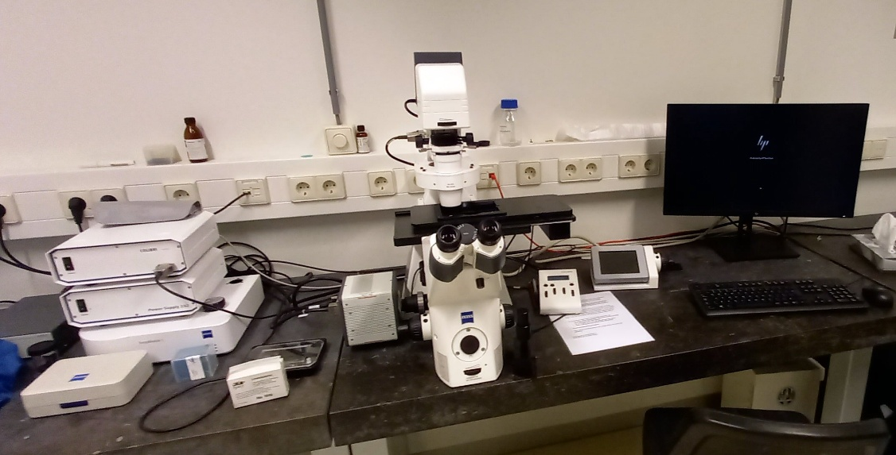
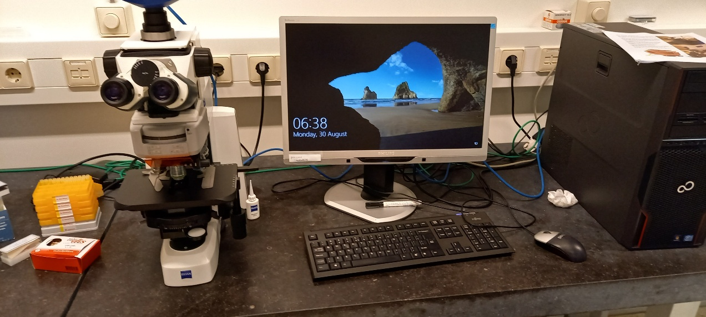
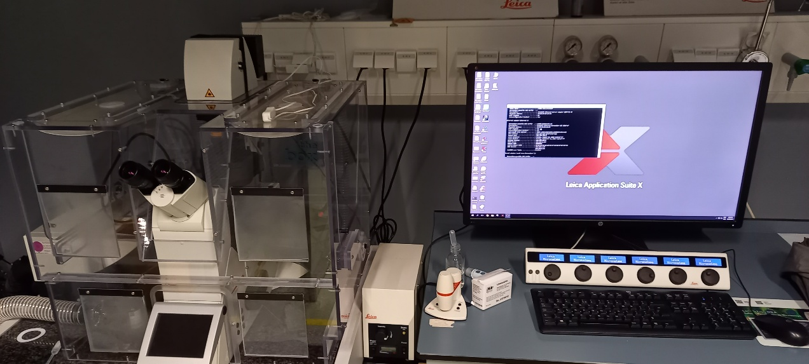

IBL Microscopes
Stereo Microscopes
Sylvius Location (Room 6.5.31)
Zeiss Stereo Zoom V16
 - Location: Sylvius, Rm. 6.5.31b - Capabilities: - Stereo fluorescence microscope - Automated focus, zoom, and stage control - Digital color camera - Multiple filters (GFP, DSR, YFP, CFP, CY5, Alexa 405) - Automated stage and incubation options - Book Stereo Sylvius
- Location: Sylvius, Rm. 6.5.31b - Capabilities: - Stereo fluorescence microscope - Automated focus, zoom, and stage control - Digital color camera - Multiple filters (GFP, DSR, YFP, CFP, CY5, Alexa 405) - Automated stage and incubation options - Book Stereo Sylvius
Zeiss V8
 - Location: Sylvius, Rm. 6.5.31a - Capabilities: - Stereo light microscope - Manual focus and zoom control - Bresser digital color camera - Book Stereo Sylvius
- Location: Sylvius, Rm. 6.5.31a - Capabilities: - Stereo light microscope - Manual focus and zoom control - Bresser digital color camera - Book Stereo Sylvius
Gorlaeus Location

Stereo Fluorescence Microscope
- Location: Cell Observatory GW2.28
- Capabilities:
- Multiple filters (GFP, DSR, YFP, CFP, CY5, Alexa 405)
- Leica DFC 345FX camera
- Book Stereo Gorlaeus
Fluorescence Compound Microscopes
Zeiss Observer
 - Location: Sylvius, Rm. 6.5.31a - Features: - Widefield fluorescence with Colibri system - DAPI, GFP, and mCherry filters - Automated stage - Hamamatsu EMCCD - Multi-well imaging capability - Book Observer - Detailed Multi-well Imaging Guide
Zeiss Axioscope A1
 - Location: Sylvius, Rm. 6.5.31a - Features: - Widefield fluorescence with Colibri system - DAPI, GFP, and mCherry filters - Book Widefield
Zeiss Imager M2 (DIC)
 - Location: Sylvius, Rm. 6.5.35 - Features: - Upright fluorescence microscope - DIC optics - Zeiss AxioCam MRc 5 digital color camera - Filter blocks for DAPI, CFP, GFP, YFP, mCherry, DIC - Custom filter options available (consult Gerda or Joost) - Book Widefield - Detailed DIC Manual
- Location: Sylvius, Rm. 6.5.35 - Features: - Upright fluorescence microscope - DIC optics - Zeiss AxioCam MRc 5 digital color camera - Filter blocks for DAPI, CFP, GFP, YFP, mCherry, DIC - Custom filter options available (consult Gerda or Joost) - Book Widefield - Detailed DIC Manual
Nikon A1
- Location: Listed under Nikon Systems
- Features:
- LED-based fluorescence excitation
- Multiple fluorescence channels
- Phase contrast capability
- Detailed A1 Manual
Confocal Microscopes
Zeiss Airyscan 900
 - Location: Sylvius, Rm. 6.5.32 - Specifications: - Inverted confocal laser scanning microscope - Temperature-controlled incubation - Automated stage control - Three fluorescence detector channels - One transmitted light channel - Laser lines: 405, 488, 543, and 633 nm - Book Confocal - View Instructions
- Location: Sylvius, Rm. 6.5.32 - Specifications: - Inverted confocal laser scanning microscope - Temperature-controlled incubation - Automated stage control - Three fluorescence detector channels - One transmitted light channel - Laser lines: 405, 488, 543, and 633 nm - Book Confocal - View Instructions
Zeiss LSM5 Exciter / AxioImager
- Location: Sylvius, Rm. 6.5.32 - Specifications: - Upright confocal laser scanning microscope - Two fluorescence detector channels - One transmitted light channel - Laser lines: 458, 488, 514, 543, and 633 nm - Book Confocal - View Instructions
Leica TCS SPE
 - Location: Cell Observatory GW 2.30a - Specifications: - Inverted confocal laser scanning microscope - One spectral detector channel for fluorescence - One transmitted light channel - Laser lines: 488, 532, and 633 nm - Book Confocal - View Instructions (Dutch)
- Location: Cell Observatory GW 2.30a - Specifications: - Inverted confocal laser scanning microscope - One spectral detector channel for fluorescence - One transmitted light channel - Laser lines: 488, 532, and 633 nm - Book Confocal - View Instructions (Dutch)
Leica SP8
 - Location: Cell Observatory GW 2.30a - Specifications: - Inverted confocal laser scanning microscope - Three spectral detector channels (2 PMT, one GASP) - One transmitted light channel - Laser lines: 405, 488, 532, and 633 nm - Book Confocal - View Instructions
Electron Microscopes
JEOL SEM 7600
 - Location: Sylvius, Rm. 6.5.34 - Features: - Conventional high vacuum scanning electron microscope - Digital imaging - Cryo-unit for freezing, coating and imaging - EDS for elemental analysis - Book SEM
- Location: Sylvius, Rm. 6.5.34 - Features: - Conventional high vacuum scanning electron microscope - Digital imaging - Cryo-unit for freezing, coating and imaging - EDS for elemental analysis - Book SEM
JEOL TEM 1400+
 - Location: Cell Observatory GW2.24a - Specifications: - 120 kV transmission electron microscope - Book TEM
- Location: Cell Observatory GW2.24a - Specifications: - 120 kV transmission electron microscope - Book TEM
Specialized Systems
LEICA DM6000 (VAST)
 - Location: Cell Observatory GW2.28 - Specifications: - Leica SL confocal CTR 6000 - DFC 450C camera - VAST BioImager + LP Sampler (Union Biometrica) - Laser lines: - Ar: 457, 488, 515 nm - HeNe: 543, 633 nm - Book VAST
- Location: Cell Observatory GW2.28 - Specifications: - Leica SL confocal CTR 6000 - DFC 450C camera - VAST BioImager + LP Sampler (Union Biometrica) - Laser lines: - Ar: 457, 488, 515 nm - HeNe: 543, 633 nm - Book VAST
Contact facility staff for training before first use of any microscope system.